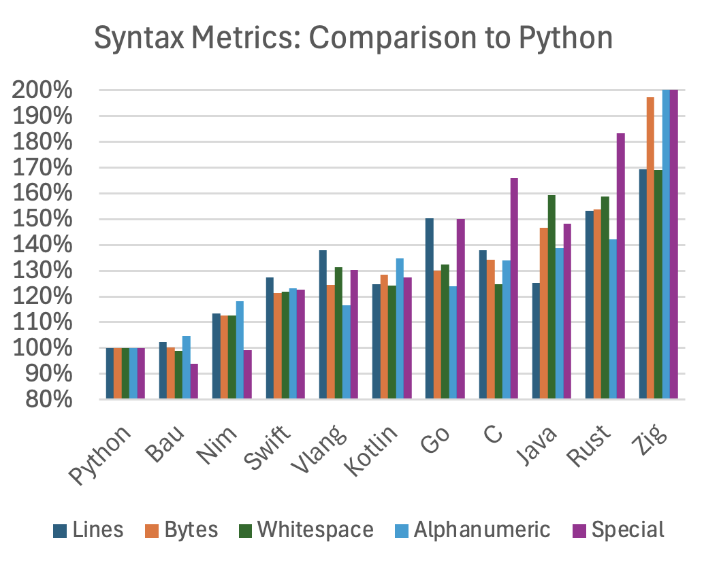

Bau attempts to be easy to learn, with clear, simple, and concise syntax. It is inspired by Python, a language widely regarded for its readability and simplicity. The following diagram compares the surface-level conciseness of the programming languages, using the source code of the benchmark implementations.
(Comparison to Python; lower means more concise)
We compare the number of lines, bytes, whitespace characters, alphanumeric characters, and special character against Python. Python is considered both concise and highly readable, and, arguably, this reputation is one of the reasons for its popularity.
For all languages, the same algorithms, variable names, and
indentation rules (4 space characters) are used. The _
character (underscore / underline) is excluded from the comparison,
because some languages use camelCase and some use snake_case, and also
because some (but not all) languages support _ to make
large number more readable. There is no trailing whitespace in the
examples, and the comments are exactly the same. The comparison is not
perfect, but shows a clear trend: Bau is very similar to Python (and
even more concise in some aspects), and the other languages are about
10% to 80% more verbose.
Conciseness and simplicity are important for multiple reasons: when writing programs, but it is even more important when reading the source code.